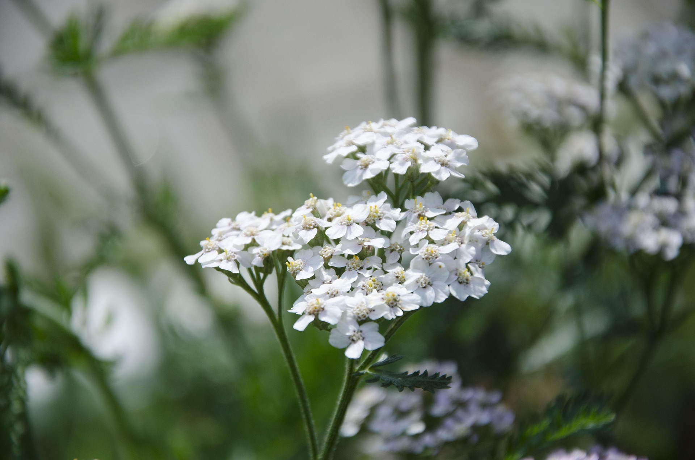

Constituents
Yarrow contains a diverse range of plant compounds including volatile oils, flavonoids, tannins, bitters, and sesquiterpene lactones. These constituents contribute to its traditional use in supporting circulation, digestion, and skin health.
Actions
Traditionally described as a balancing herb, Yarrow is known for its astringent, aromatic, and circulatory-supporting qualities. It has been used to support healthy sweating, ease digestive discomfort, and promote normal wound healing.
Traditional uses
Yarrow has a long history in European, Asian, and Indigenous North American herbal traditions. It was commonly used for wound care, digestive support, menstrual balance, and to promote healthy circulation. Folk traditions often regarded it as a protective and restorative plant.
Current uses & research
Today, Yarrow is used in herbal practice to support digestion, circulation, and skin health. Research continues to explore its aromatic compounds and their potential roles in digestive comfort and normal inflammatory responses. It remains a popular herb in teas, tinctures, and topical preparations.
Key preparations
- Tea: Commonly made from dried flowering tops for digestive and circulatory support.
- Tincture: A concentrated liquid extract of the aerial parts.
- Topical applications: Used traditionally in washes, compresses, and salves for skin support.
Practical self-help uses
Yarrow is often included in herbal blends for digestive comfort, menstrual balance, and general circulatory support. Topically, it has been used in traditional self-care for minor skin irritations. As always, these uses are part of traditional herbal practice and not medical treatment.
This profile is an original summary based on general herbal knowledge. It is not a copy of any specific book or source. The information is for educational purposes only and is not a substitute for professional medical advice, diagnosis, or treatment.